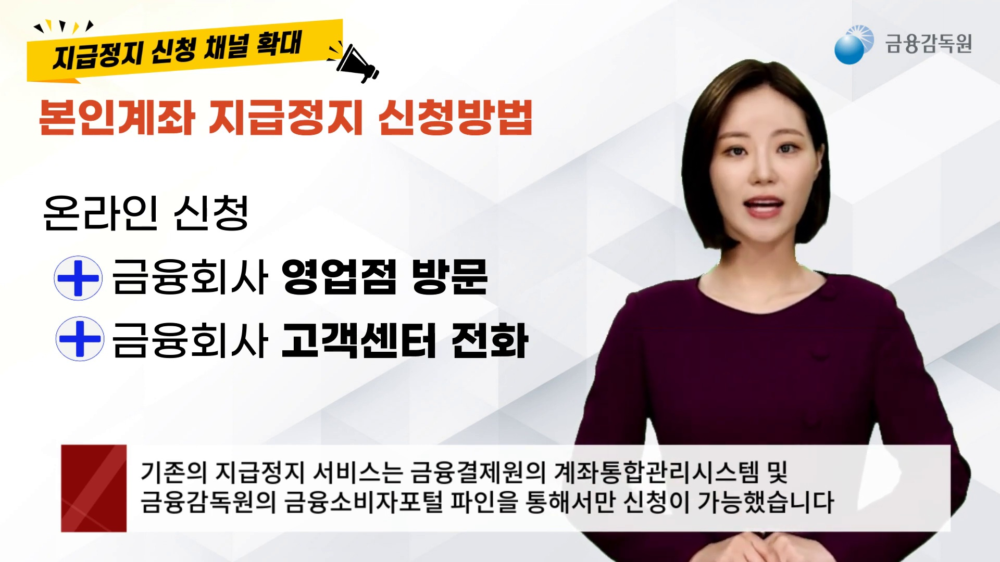
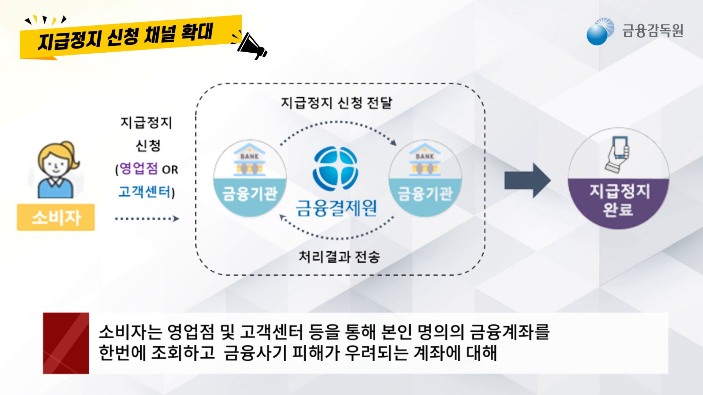
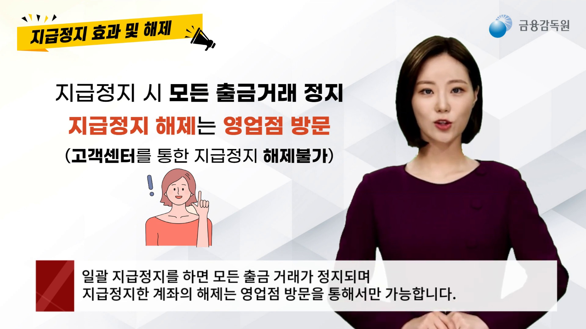

1
이미 송금한 상대 계좌를 멈추려면
금융회사 콜센터 또는 금융감독원 1332에 별도 지급정지 요청과 피해구제 신청을 해야 한다는 핵심 행동을 먼저 보여줍니다.
배치 위치: ‘지금 바로 해야 할 일’의 112·금융회사 신고 순서 바로 아래
금융감독원 공식 유튜브의 핵심 장면과 경찰청 예방수칙을 행동 순서에 맞게 배치했습니다.
금융회사 콜센터 또는 금융감독원 1332에 별도 지급정지 요청과 피해구제 신청을 해야 한다는 핵심 행동을 먼저 보여줍니다.
악성 앱이나 인증정보 유출로 내 다른 계좌까지 위험할 때 온라인·금융회사 영업점·고객센터 중 어디로 신청하는지 보여줍니다.

고객센터나 영업점 신청이 금융결제원을 거쳐 각 금융회사로 전달되고 결과가 돌아오는 구조를 한눈에 보여줍니다.

본인 명의 수시입출금식 계좌와 금융투자회사 계좌가 대상이며, 필요한 일부 계좌를 선택할 수도 있음을 보여줍니다.
지급정지하면 모든 출금거래가 멈추고, 해제는 고객센터가 아니라 영업점을 방문해야 한다는 주의점을 보여줍니다.

수사기관 금전 요구, 가족 사칭, 낯선 링크, 카드·등기 사칭을 한 장에서 확인하는 저장용 이미지입니다.